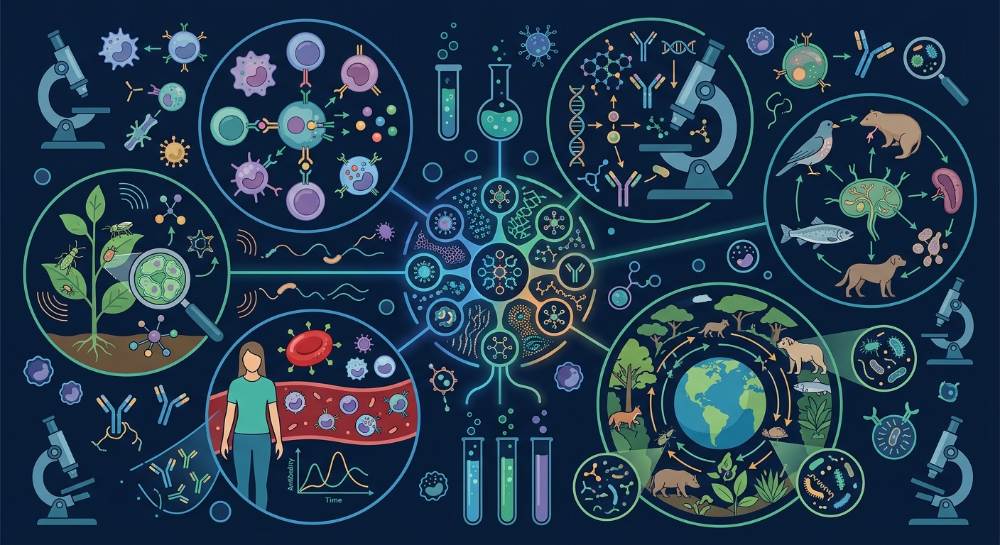

Gallery v1.0.0 · skill v7.14
机体怎样通过反馈调节维持内环境稳定？

先选一个卡点。后面的例子、互动和 AI 学伴都会围绕它给你最小提示。
选择或输入后，本课会围绕你的问题展开。
如果学生只说出概念名称，继续追问：题干里哪个证据最关键？这个证据对应分子、细胞、个体还是生态系统层级？如果改变 抗原类型、抗体浓度、T细胞/B细胞活化、记忆细胞数量 中的一个条件，结果会怎样？这三问能把答案从背诵推进到科学解释。
❓ 为什么我打了疫苗还是会感冒？
❓ 过敏反应和免疫缺陷病都是免疫系统出问题，有啥区别？
❓ 听说艾滋病病毒专攻免疫细胞，它怎么做到的？
学完这一课，这些问题你都能自信地回答。
已经知道：此前已学习人体三道防线（皮肤屏障、吞噬细胞、淋巴细胞），知道疫苗能预防传染病，了解艾滋病破坏免疫系统的现象
但问题是：难以区分体液免疫（B细胞产生抗体）和细胞免疫（T细胞直接作用）的协作机制，常混淆抗原（病原体部分结构）与抗体（免疫球蛋白）的关系
所以学：当医生分析新冠患者血检报告时，需要根据IgM/IgG抗体水平判断感染阶段，这要求准确掌握两种免疫应答的时序特征和生物学标志
关于二次免疫的特点，正确的是？
设计实验比较不同年龄段人群接种同款疫苗后的抗体水平
现象入口：病原体入侵后，机体会先产生非特异性防线，随后启动特异性免疫反应。
机制解释：免疫调节由免疫器官、免疫细胞和免疫活性物质共同完成，体液免疫和细胞免疫分工协作。
证据抓手：证据来自抗体水平变化、记忆细胞二次应答、疫苗接种效果和炎症反应。
变量线索：抗原类型、抗体浓度、T细胞/B细胞活化、记忆细胞数量。做题时先找变量，再判断机制，最后写证据。
情境：疫苗不是直接杀死病原体，而是训练免疫系统形成记忆。
作答路径：疫苗含灭活病原体→刺激B细胞分化为浆细胞和记忆细胞→再次感染时记忆细胞快速增殖分化为浆细胞，产生更多抗体→血清抗体检测显示二次免疫抗体浓度更高
评分提醒：典型失分：混淆抗体产生细胞（应为浆细胞）；忽视细胞免疫对胞内病原体的必要性；二次免疫特点表述不完整
观察体液免疫中B细胞分化为浆细胞的过程，注意抗体与抗原的特异性结合
分析二次免疫中记忆细胞如何快速增殖分化，比较初次与二次免疫的抗体浓度曲线
阐明效应T细胞如何识别并裂解被病原体感染的靶细胞，释放抗原
应用免疫原理解释疫苗接种后体内抗体水平变化的原因
解释过敏、疫苗、器官移植排斥和免疫缺陷，都要分清免疫环节。
提交后会检查你的解释是否包含现象、机制和变量。
真实规律：二次免疫因记忆细胞存在，潜伏期更短、抗体峰值更高——疫苗正是利用这个原理。
💡 探究任务：对比两次应答的峰值与潜伏期，解释为什么很多疫苗需要接种两针以上。
下列哪种细胞能直接产生抗体？
先独立作答，再点选项查看对错与错因。
接种流感疫苗后，体内首先发挥作用的是
少数接种者仍感染流感，最可能的原因是
下列属于细胞免疫过程的是
疫苗相当于____，刺激机体产生____细胞提供长期保护
答案：抗原,记忆
疫苗含抗原决定簇，激活B细胞形成记忆细胞
非特异性免疫的特点是____和____
答案：生来就有,不针对特定病原体
固有免疫具有广泛性
被狂犬病毒感染的神经元最依赖哪种免疫方式清除？
学习小结：特异性免疫通过B细胞产生抗体清除体液病原体，T细胞裂解感染细胞；记忆细胞使二次免疫更快更强，这是疫苗起效的核心机制
把抗体、抗原、疫苗和抗生素混为一谈，是免疫题常见错误。
只说“增加/减少”不够，要写清改变的是 抗原类型、抗体浓度、T细胞/B细胞活化、记忆细胞数量 中的哪一个。
没有实验现象、曲线趋势或结构证据，答案就像猜测。
✅ 疫苗是灭活/减毒的抗原
💡 混淆抗原与抗体的概念
✅ HIV特异性攻击辅助性T细胞
💡 未理解HIV靶向性
口诀：三道防线层层拦，特异非特异要分全
类比：免疫系统像国家安全系统，边防军（皮肤）、巡逻队（吞噬细胞）、特种部队（淋巴细胞）各司其职
视频用语音和动态画面回顾本课主线：问题情境 → 机制模型 → 证据判断 → 迁移应用。
旋转 3D 分子模型，观察结构层级。请把结构特点和 免疫调节 中的功能解释对应起来：结构不是装饰，而是功能的证据。
💡 操作提示：拖拽旋转模型，思考“形状、空间位置、结合位点”如何影响生命活动。
列举体液免疫中浆细胞和记忆细胞的来源与功能
分析艾滋病患者易发肿瘤的原因（提示：HIV主要破坏T细胞）
设计实验验证二次免疫反应更强（需说明对照组设置）